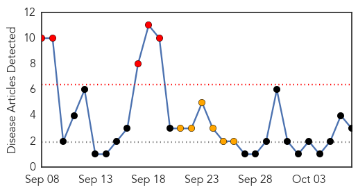

Meningitis
30-Day Web Trend
5 alerts, 6 warnings

30-Day Twitter Trend
0 alerts, 0 warnings
Article Locations
Article Confidences
Top Articles:
Top Tweets:
-
No tweets found for Oct 07, 2014
Influenza
30-Day Web Trend
17 alerts, 7 warnings

30-Day Twitter Trend
2 alerts, 0 warnings

Article Locations

Article Confidences

Top Articles:
- 0.997
- Juneau Empire - Alaska's Capital City Online Newspaper
- 0.995
- Flu Shots Can Help Fight Enterovirus
- 0.992
- Why you should get a flu shot (VIDEO)
- 0.949
- Flu vaccinations begin at Salt Lake County Health Department -
- 0.938
- Scientists say Honeysuckle in drinks could be used to treat influenza
- 0.937
- Death of New Jersey preschooler due to enterovirus causes concerns on Staten Island
- 0.931
- International Equine Disease Report, Second Quarter 2014
- 0.923
- Nasal spray flu vaccine still not covered by Ontario government
- 0.922
- Flathead County Health Department hosts flu clinic
- 0.916
- Hartford Schools To Families: Get Your Flu Shot
- 0.912
- Three cases of flu reported in state
- 0.893
- Preschools consider requiring flu shots
- 0.870
- Illness afflicting Seabrook boy suspected as enterovirus D68
- 0.688
- Drs. Oz & Roizen: For most folks, getting flu shot is no-brainer
- 0.605
- The Lancet Respiratory Medicine
Top Tweets:
- 0.840
- .@cattlecupcakes- The flu vaccine doesn't protect against non-influenza viruses which is what we typically call the stomach flu fluplusyou
- 0.526
- RT: Much focus on viruses. Today, I want to chat about another one, influenza, the flu. Join me today 1PM ET for abcDrBch…